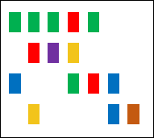

jsComut Javascript library for interactive co-mutation plots
This is a demo page for the jsComut which provides preload genomic data for users to checkout the features of this widget. Alternatively, users can upload their own data for visual analysis.